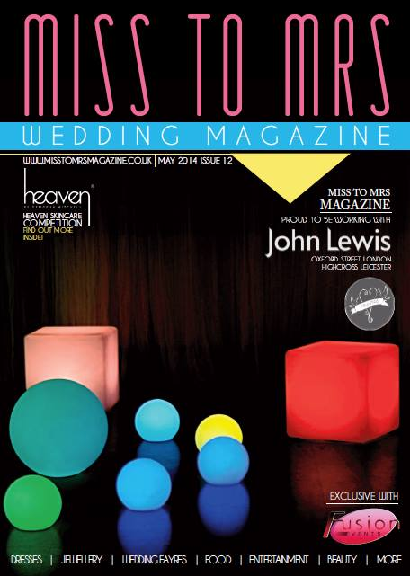
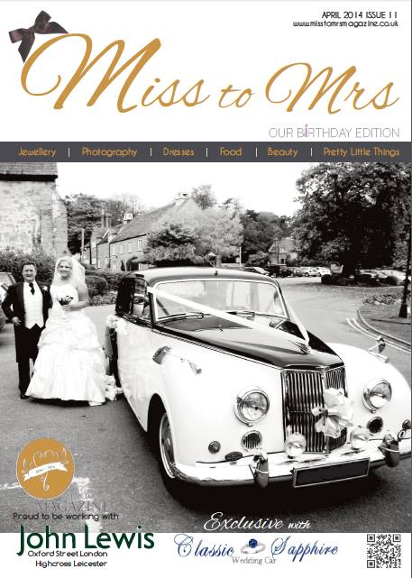
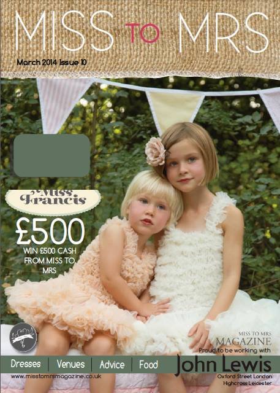
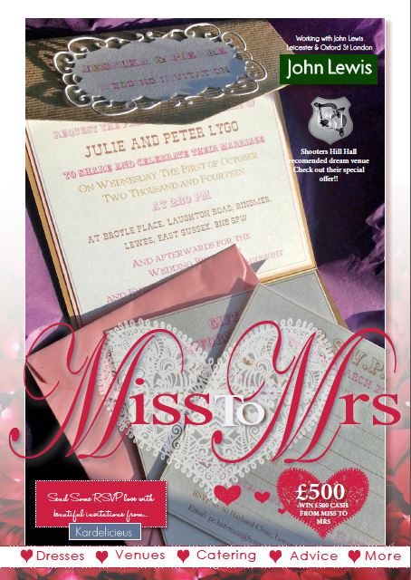

Miss to Mrs is a free magazine established in 2013 to help you plan your big day.
Packed full of exciting ideas, Miss to Mrs is guaranteed to have something to inspire you.
Packed full of exciting ideas, Miss to Mrs is guaranteed to have something to inspire you.